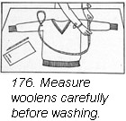

1930—Paris Frocks at Home
Lesson XIII—Tubbing Paris Frocks at Home
Emancipation for washwomen
The weekly wash would have no terrors if it consisted of the clothes we women wear. Fine materials an scanty garments, both as to size an number, have changed the whole aspect of wash day. In fact, one's personal ash might well be done in a wash bowl.
Successful results in washing our stockings, gloves, scarfs, dresses and soft, silky lingerie depend upon our washing methods.
Washing the little accessories has become so simple that it is possible at all times to step out looking immaculate to the smallest detail.
These are the new rules for washing.
- Prepare moderately warm suds, with a mild, pure soap—flakes, beads or cake.
- Squeeze or knead the suds through the garment from three to five minutes.
- Rinse two or three times in lukewarm water.
- Squeeze the water from the garment.
- Roll tightly for a few minutes in a bath towel.
- If colors are doubtful, remove from towel.
- Iron on the wrong side with a moderate iron before the garment has become entirely dry.
Directions for preparing the suds.
Start with a small quantity of hot water in the pan or the basin. Dissolve the soap in the hot water and then add cold water to bring the temperature to about 100° F. or a temperature which feels comfortable to the hands. Do not wash any of your fine garment in too hot water. If you want to be accurate, a tablespoon of soap flakes to a gallon of soft water makes the water just about soap enough. Hard water requires more soap or a little borax or water softener. Great billows of fluffy suds get in the way of your washing an are a nuisance to rinse but the water should remain moderately sudsy. If the suds break down add more dissolved soap to the wash water.
The smart woman is a smart wash woman.
This is the way we wash our clothes. We do a great deal of squeezing and a very little or no rubbing. Shades of the good old wash board! Squeeze or knead the suds through the garment. When the water gets dark in color, wash the garments again in fresh suds for three to five minutes. Grimy edges or muddy spots may need a little light rubbing between the hands. Don't rub too long or too hard.
This is the way we rinse our clothes.
Two thorough rinsings should be sufficient, if plenty of water is used each time. The temperature of the water should be the same as you used for washing. If the colors show a tendency to run, the rinse water should be colder, or even cold, since cold water retards the running of color. White silks should be washed and rinsed in moderately warm water. Hot water as well as direct sunlight during drying will turn silk yellow. Finish white silks in a lightly blued rinse water.
This is the way we wring our clothes.
Remove the rinse water from your clothes by squeezing, not by wringing. Hard twisting strains and breaks fine threads. Wringing out stockings and knitted silk undergarments will twist and weaken the threads so badly that runs may start. Knitted garment which do not need ironing should be pulled into shape and hung up to dry indoors away from direct sunlight or heat but preferably in a draft. Rayon garments should be hung up without clothes pins. The pressure of the wooden pin tends to break wet rayon threads.
When garments are to be ironed do not let them get thoroughly dry but roll up between two large bath towels or two pieces of an old sheet. Cover the roll with another towel and leave it rolled tightly until you are ready to iron. If the garment is colored and inclined to run roll it between towels to take out the excess moisture. Tae it out immediately and shake it in a draft or before an electric fan until it is almost dry and press it immediately. The color in a garment seldom streaks while it is being washed but it may do so during drying of the garment if the garment dries too slowly. The trick is to wash quickly, absorb the excess moisture quickly, shake dry and press immediately.
We used to think that colors could be set by putting salt or vinegar in the water during washing. This is not the case. The only sure way to wash fugitive colors successfully is to have everything ready before you begin and then work fast.
This is the way we iron our clothes.
Your washing should have removed all the soil and loose dye from your garment. Then drying and ironing should be done rapidly—but do not hang anything on a hot radiator in your desire to speed up the drying process. It doesn't pay.
Consider weight and weave.
The weight and weave of your material determines how damp the garment should be when it is ironed. Some crepes in silks, synthetic fabrics or cotton should be ironed when they are practically dry. Elastic crepe weaves will stretch badly if ironed moist. Flat weaves in silk, like broadcloth, radium or flat crepe, should be damp when ironed. Most silks, however, are ironed when practically dry since moist silk when ironed with a hot iron becomes stiff and wiry looking. If a silk material needs to be dampened do not sprinkle it but roll it up with a slightly damp cheese cloth. The moisture will penetrate evenly.
Don't run a temperature.
Too hot an iron will injure fabrics. An iron which sizzles slightly when touched with a moist finger is safe for cottons. A slightly cooler iron should be used for silks and a much cooler iron should be used for synthetic fabrics. There are electric irons on the market which can be adjusted to three temperatures, low, medium, and high. There will shortly be irons which not only have temperature controls but will also have temperature indicator as well.
Garments are usually pressed on the wrong side. Where you have to press double material, press first on the wrong side, then cover the right side with a piece of cheese cloth and press again on the right side. When ironing, the strokes of the iron should follow either the lengthwise grain or the crosswise grain of the material. Iron with the threads of material, not diagonally across them. Loose ends on a garment are usually iron first, then the sleeves, and then the body of the garment. One usually works from the top towards the bottom.
Keep the plaits under control.
An easy way to launder plaited collars is to run a row of bastings to hold down the plaits at the edge. Plaits in skirts should be basted down at the bottom and at intervals of 6 or 8 inches up the skirt, before the dress is washed.
Graceful flares must hold their shape.
Generally speaking, it is better to get the effect of fullness in wash dresses by means of plaits rather than flares since flaring sections present greater difficulty in ironing. Always iron flares along either the lengthwise or the crosswise thread of the weave—never iron on the bias. This will keep your circular flares in position. Ironing on the bias will pull the flared portion of your skirt out of place and make the skirt hang badly. Hang your dress up for a day or so before wearing it so that the flared part of the skirt will fall into line.
Use beaded garments gently.
If you should need to launder a beaded dress or collar, use the same method as for thin crepe. Do not put beaded garments through the wringer. You will break the beads. To iron, lay the garment right side down on a Turkish towel or soft pressing surface and iron on the wrong side. This should be done also with embroidered garments so that the embroidered design will stand up from the surface.
To dye or not to dye.
When pastel colored garments have lost their color during washing one of the good tinted washing dyes or dye soaps will restore their freshness.
Washing no longer shrinks our woolens.
Washing woolens is not easy. The modern way of washing, however, will keep them from shrinking if we follow these directions in every respect. Wool fibers which are spun to make wool yarn and thread have a surface made up of small overlapping scales. The natural oil in the sheep's skin keeps these tiny scales lubricated and soft. When the wool is cut off, the scales show a tendency to slowly dry out. In correct washing will cause the wool fiber to harden, stiffen and draw together, in other words, shrink, as well as become yellow in color. Hard shrunken woolen fabrics have not only become shorter than they were originally but they have lost a great deal of their warmth. Our washing then, must preserve the softness and fluffiness which the wool had when it came from the sheep's back in all its lovely color.
There are four easily avoidable conditions which tend to destroy the softness of woolens and make them shrink. The first is hard rubbing while wet, the second is the placing of the material in hot water, the third is a sudden change fro hot to cold water during washing or rinsing, and the fourth is the presence of strong alkali in the soap used for washing.
Hard rubbing or friction will cause woolens to shrink and get board-like more quickly than anything else. Since this is the case, dirt should be squeezed and floated out of woolen materials, never rubbed.
Take a look at the weather.
Before you embark on a laundry job on your blankets or Junior's white flannel trousers, take a look at the weather. If the day is sticky and humid and breathless even though the sun is shining, postpone your laundry day. To dry woolens successfully you need clear fresh air and a good breeze. If the pieces are small like the children's white berets, you can hasten drying by turning on the electric fan.
Measure your sweaters before you wash.
Measure the size of your woolen garments before you begin to was them, sleeve lengths, width across the chest, length of underarm seam, length of shoulder line, width at the bottom, and write these measurements down.
Baby's stockings and little shirts should be slipped on the right sized wooden drying frames in order to dry them quickly and keep them the correct size.
Wash woolens this way.
Washing water and all rinsing waters, as well, for woolens, should be lukewarm. Now, just what do we mean by that? Well, if you have a thermometer make the water somewhere between 95° and 105°. This temperature feels just comfortably warm to your hands. s It is perfectly safe for woolens since it does not draw out the natural oils in the woolen yarn.
Bear in mind as you wash your woolen clothes that the temperature of every water bath you use must be the same—lukewarm. You may need to use two soap baths if the garment is quite soiled and at least three rinse waters.
The more suds the better.
Plenty of suds is necessary for washing wools, since heavy suds will act as a cushion between the surfaces of the woolen garment as you pat and squeeze it. The suds act as a lubricant and they also assist very greatly in floating out the dirt.
Soap flakes usually make the best suds although a bar of soap may be dissolved and whisked into suds in a pan or bowl of very hot water, which, if course, must be reduced to the right temperature before the woolen garment is put in. If the water is at all hard, borax will help to soften it. If the water in your locality is very bad you had better add a little borax and soap to each rinse water also.
Woolen garments may be washed by hand or in a washing machine but they should not be overcrowded. Do not try to wash too many garments at a time, and squeeze or agitate the garments in the sudsy bath only about fifteen minutes.
As you take the garment from the water gather it up in your hands so as to prevent the weight of the wet garment fro pulling any part of it out of shape. Wools stretch so easily.
This is the way we squeeze and dry.
Squeeze out the excess water gently with the hands or between the rollers in a wringer. Loosen the pressure of the rollers so that there is no danger of flattening down the fuzzy wool yarn. Get the moisture out by successive squeezing or trips through the wringer rather than attempting to get the water out all at once. Shake the garment back to fluffiness.
Small pieces may be squeezed by hand but not twisted, then placed in a bath towel and the bath towel squeezed slightly to remove excess moisture.
Sweaters and knitted wool articles should e dried flat on a table spread out to the original size and shape in accordance with the measurements you took before you washed the garment.
Hang woven woolen garments like flannel jackets on hangers until partly dry. Move them about occasionally so that the water does not settle at the bottom. Colored flannels may develop a dark uneven color streak at the bottom if moisture is allowed to settle in the hems. Press flannel on the wrong side before the garment is entirely dry if you would preserve that new look.
To dry blankets, place them on a long line out-of-doors if possible, and in the shade, or on a curtain stretcher. Hang the colored borders so that the stripes run perpendicular to the line. If there is any tendency for the colors to run they will not run into each other. Before the blankets are completely dry, shake them and fluff them up. Fluffy blankets are always warmer than flat ones.
All we have said about smart ways to wash woolens may be summed up in the following rules.
The rule of eleven.
- Wash before very soiled.
- Choose a clear breezy day.
- Measure knit goods before wetting.
- Wash with mild soap containing no free alkali.
- Have water temperature between 95° and 105° F.
- Have wash and rinse waters same temperature.
- Rinse till last water is clear.
- Do not twist or wring between tight rolls.
- Shape and measure knit goods before drying.
- Dry quickly, but not in strong sun.
- Place in draught or use electric fan to dry indoors.
If you can see the spot, so can everyone else.
Did the little boy who sits back of Mary "throw ink on her dress"? Most certainly not, but somehow the ink spot got there. And what of the lettuce leave that came to life when your fork touched it and showered little spots of French dressing on your new silk crepe blouse. Two of life's minor tragedies!
Each stain is a problem in itself. There can be no universal stain remover. Each fiber, cotton, wool, silk, linen and rayon has a different chemical composition and reacts differently to commercial stain removers. A stain remover might be successful on some materials and destructive to others.
To remove ink stains.
Let us explain how easily writing ink can be removed by the Delineator Home Institute method. It has been used successfully not only on white materials but on colored ones as well. This, however, depends on the character of the dye. Experiment first, on a part of the garment which does not show.
You need a small bottle of hydrogen peroxide and an ounce or two of oxalic acid crystals. Use the peroxide full strength but dissolve on level tablespoon of oxalic acid crystal in a cup of water. Now, a word of caution: dissolved oxalic acid looks just like clear water and it has no odor but it is a deadly poison. So put the solution in a small bottle, label it plainly, and keep it well out of reach on a high shelf.
Now, put the tea kettle on to boil. Then wash or sponge the ink stain with soapy water. Use a medicine dropper, glass rod or orange wood stick and drop on the spot a few drops of hydrogen peroxide; a drop or two at a time is enough. Use your peroxide sparingly if the garment is colored. Hold the stain close to the steam at the spout of the boiling tea kettle. You will notice the dark color of the ink spot begin to fade out to a dirty yellow. Use more peroxide and steam until the spot becomes a clear faint yellow.
Now rinse the steamed spot in warm water and touch with a drop or two of the dissolved oxalic acid. The yellow stain will probably disappear but if it shouldn't immediately, hold it for a moment in the steam. Be careful not to steam more than a second or two after the oxalic acid has been used because the combination of heat and oxalic acid may destroy the fabric.
If at first you don't succeed.
If you notice a faint blue spot appearing when the oxalic is applied, that shows that the first treatment with peroxide was not complete, so you had better repeat the treatment with peroxide again. The final treatment with oxalic will then be successful. Finally, the spot being entirely removed, rinse the moist part of your garment thoroughly through several waters.
And now to route the demon grease spot.
Success in removing these spots without leaving any suggestion of a ring depends more on skill and technique in handling the fabric than upon the virtues of the grease solvent or commercial stain remover. There are a number of good preparations on the market for removing grease. The trick is not so much to remove the spot as to do it without leaving rings, smudges or an area that looks too clean for the rest of the garment. It can be done successfully, however, or if a slight contrast between the cleaned place and the rest of the garment is noticeable that probably is better than a decidedly dirty spot or stain on the dress.
Grease solvents will evaporate from cloth very quickly but grease will not, and even when it is floated out of the spot it will show up in the fabric after the stain remover has evaporated unless it is taken up by some absorbent material used under the stained garment while it was in solution in the stain remover. Part of the grease is taken up by the sponging cloth with which you apply the grease remover but a folded absorbent cloth should be placed under the place you are sponging to act as a wick to draw up and absorb the grease and the grease solvent.
Another equally important point is to use your stain remover sparingly and if necessary, repeat the operation rather than squeeze cleaning fluid from the sponging cloth on to the material. In other words, persistent, very light sponging, with a slightly moistened cloth is much better than wet and drippy applications. The stroking, sponging motion should be carried over the spot and gradually out from the spot into the clean part of the garment on all sides.